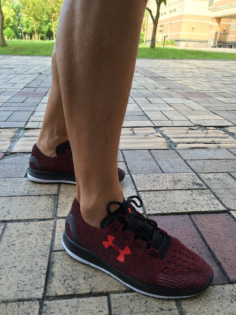

「什麼樣的跑鞋可以提升跑步技術？」是一個錯的問題
幾乎每次上課都有人問「跑鞋」的問題。但熟識我的人都知道我對鞋、衣著、裝備的興趣缺缺，也沒什麼研究，只要覺得舒服好穿就好。舊鞋通常最舒服，所以一雙鞋可以穿好幾年。也有不少人認為跑鞋可以改善跑姿，避免受傷，而這些訊息大多是從跑鞋品牌商等以直接或間接的方式發布出來的，有些直接寫在DM上還算有良心，有些則透過媒體的業配文加以宣傳「此鞋的獨一無二的避震功能或預防受傷的效果」，有些則透過似是而非的論文來宣稱「預防受傷與提升經濟性的效果」。每次羅曼諾夫博士在每次演講時碰到像「什麼樣的跑鞋可以提升跑步技術？」的問題時，他的回答都是「沒有跑鞋可以提升技術，唯有正確的練習才會。就像千萬超跑跟開車技術完全無關。」因為這是一個錯的問題，錯的問題會導向錯的討論與研究方向。
關於跑鞋，對的問題應該是「跑鞋的功能是什麼？穿鞋跑為什麼比較快？」「挑選跑鞋的最高原則是什麼？」
第一個問題：〈跑鞋的功能是什麼？〉
當今世上所有的跑步世界紀錄都是由穿鞋跑者所跑出來的，雖然赤腳比較輕，久經訓練後赤腳也可以跑高強度的馬拉松，不會起水泡或磨破皮，但為什麼同一個跑者在赤腳的情況下會輸給穿鞋的自己呢？
我們都知道加速的原動力來自「落下」(falling)的角度與速度。跑者在加速時，勢必會使重心前傾更多的角度到支撐腳的前方，為了更快達到更大的角度，支撐腳上的摩擦力就必須足夠穩定落下時向後的分力，若在光滑的冰面上跑步，加速的過程中因為支撐腳腳掌滑動，就會無法創造更大的落下角度，所以速度跑不出來。但如果穿上釘鞋，就能提高穩定支撐，有了穩定的支撐，落下的角度與速度才有可能再增加。
所以跑鞋的主要功能是增加摩擦力(俗稱抓地力)，使支撐更穩定，才能更快創造更大的落下角度。當然，跑鞋的附屬功能是保護腳掌，使它不受地面尖刺物品所傷害，這也是很重要的。
第二個問題：〈挑選跑鞋的最高原則是什麼？〉
對我來說，跑鞋舒服就好。自己會開始跑步是因為想練鐵人三項，在鐵人賽時為了節省轉換的時間，我們都不會穿襪子，所以在挑跑鞋時，我首先會先把手伸進鞋的「內裡」，確定滾口、鞋跟、鞋帶、網布、鞋面與鞋尖處都沒有縫線或任何不光滑的表面，若有的話在沒穿襪子的情況下一定會磨出水泡來(有些縫線較粗糙的鞋款就算穿上襪子也會磨腳)。這是我首先確認的事，如果內裡有縫線就會直接放回展示架，只有找到內裡四處摸起來舒服的鞋款，才會套上腳上試穿。
試穿的重點，大抵上依循羅曼諾夫博士所提的三個原則：
1、盡量「平底」，也就是腳尖與腳跟接近零落差(Zero Drop)的鞋款，現在大多數的跑鞋都會落差多少，名稱大都用「跟掌差」。接近就好，不一定要完全零落差，只要10毫米(1公分)以下都符合博士對平底的要求；但掌跟差若大於2公分，就會引導跑者腳跟先觸地，如果落地點接觸臀部下方還不容易受傷，掌跟差太大的主要缺點是會無法有效利用跟腱的彈性來跑步，使跟腱和小腿無法自然伸長。誇張一點的例子就像女生穿高跟鞋，穿久了跟腱長期處於收縮狀態，就會失去該有的彈性和功能(彈簧的功能)。
2、再來是「輕薄」。道理很簡單：愈輕愈省力，拉回臀部下方的速度也會加快。
3、最後是「柔軟」。穿起來要像在穿襪子一樣：「在繫緊鞋帶時從足弓到腳踝都要完全跟鞋子密合，接著把位於腳趾頭與蹠球部的鞋帶鬆開一些。鞋帶的鬆緊度應該適中，使腳掌自然地服貼在鞋面上，不要讓腳趾頭蜷屈在鞋尖處，但也不要讓它們有太多空間可晃動。」穿起來在試跑時會發現整雙鞋子跟著腳掌一起自然地彎曲，彎曲時鞋底不會有阻力，鞋帶也不會摩擦到腳背。

總而言之，我個人認為：跑鞋只要舒服、輕薄、柔軟就是好鞋。到目前為止，我穿過眾多的跑鞋中，就屬UA這款SpeedForm Slingride最符合上述這些要求。內裡完全無縫，穿起來像襪子一樣舒服，支撐性與抓地力都好、掌跟差只有6mm，重量242公克。這是我目前穿過最舒服的跑鞋了。
(本文關於挑鞋原則的內文參考自《羅曼諾夫的姿勢跑法》(The Running Revolution)，56~58頁)